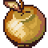
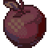

Instructions
Collect as many apples as possible!

Red apple: +1

Golden apple: +10

Rotten apple: -5 (and -1 life)
Time limit: 30 seconds
Warning: if a pigeon appears,
shout or blow to scare it away!
Microphone not set up